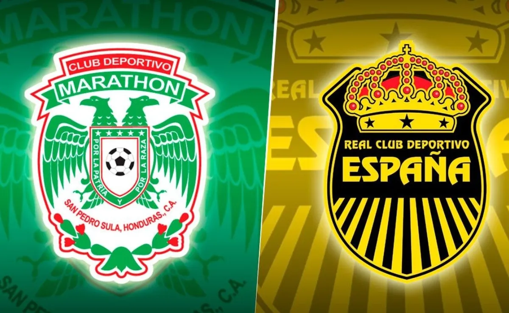

SAN PEDRO SULA, HONDURAS.- ¡Ridículo total! En una deficiente presentación, la Selección Nacional de Honduras cayó 1-2 ante su similar de Curazao en el estadio Olímpico en el duelo correspondiente a la jornada 2 de la Liga de Naciones de Concacaf. Con goles de Leandro Bacuna, un viejo conocido de la H, y Anthony Van Der Huuk, el conjunto caribeño dio un batacazo y complicó las opciones de Honduras para clasificar a la Copa Oro 2023. Romell Quioto se encargó de maquillar el resultado con un golazo de tiro libre al 94. Los curazaleños fueron contundentes frente a una selección hondureña que a lo largo de los 90 minutos se vio supera por el equipo dirigido por Art Langeler. Con este duro revés, la Bicolor está obligada a vencer a la mundialista Canadá el próximo lunes en el estadio Olímpico para así mantener vivas sus opciones de clasificar a la Copa Oro. Una derrota frente a los de la Hoja de Maple dejaría a la H muy complicada en cuanto a la clasificación al certamen y con el riesgo de descender hacia la Liga B.
LA SELECCION PIERDE Y COMPLICA SU BOLETO A LA COPA ORO
Leandro Bacuna y Anthony Van Der Huuk fueron los verdugos de una H que nunca encontró respuestas y dio una pobre imagen ante su público. Romell Quioto maquilló el resultado con un golazo de tiro libre al minuto 90.
Noticias relevantes

Vibrante clasico Sampedrano esta noche en el estadio Yankel Roshental.
Real Madrid ficha a Tchouameni por 100 millones de dolares.
Jerry Bengtson es baja de última hora para Honduras
Aficion del Olimpia sale a celebrar a las calles su 110 aniversario

Conoce los estadios mas vistosos del mundial de Qatar 2022.
¡ESCANDALO EN BARCELONA! Pique y Shakira se separan.